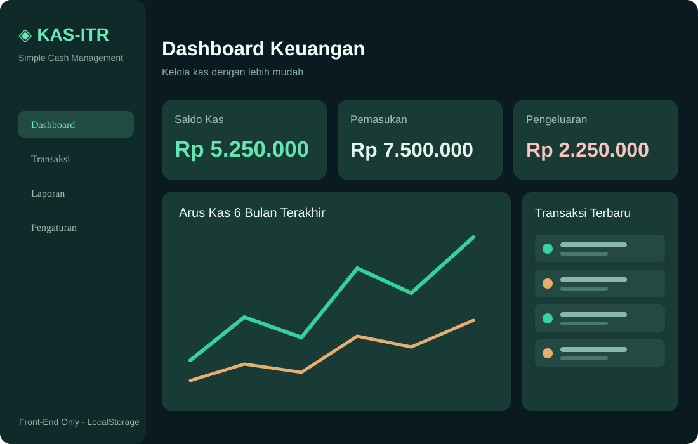

▦
Dashboard Keuangan
Saldo kas, total pemasukan, total pengeluaran, grafik enam bulan, dan transaksi terbaru.
Aplikasi pencatatan kas masuk dan kas keluar yang sederhana, terstruktur, dan nyaman digunakan. Dibangun untuk mendemonstrasikan pengolahan data keuangan melalui JavaScript tanpa backend.

KAS-ITR dirancang sebagai simulasi aplikasi administrasi kas untuk organisasi, komunitas, atau kegiatan. Pengguna dapat mencatat pemasukan dan pengeluaran, menelusuri transaksi, serta melihat ringkasan saldo secara otomatis.
Seluruh logika berjalan di sisi browser. Data disimpan menggunakan LocalStorage, sehingga proyek ini berfokus pada pengalaman pengguna, pengelolaan state, validasi formulir, dan penyajian data.
Membangun aplikasi Front-End yang memiliki fungsi CRUD, perhitungan saldo, visualisasi data, dan laporan yang dapat digunakan tanpa server.
⚑ Demo portofolio — bukan sistem akuntansi resmiSaldo kas, total pemasukan, total pengeluaran, grafik enam bulan, dan transaksi terbaru.
Tambah, ubah, dan hapus transaksi dengan jenis, tanggal, kategori, dan nominal.
Temukan transaksi berdasarkan kata kunci, jenis kas, dan periode bulan.
Rekap transaksi bulanan, ekspor CSV, dan cetak atau simpan PDF lewat browser.
Ekspor cadangan JSON dan impor kembali data untuk kebutuhan pemulihan.
Antarmuka responsif dengan mode terang dan gelap yang nyaman digunakan.
Ilustrasi UI untuk kebutuhan presentasi portofolio, bukan tangkapan layar asli aplikasi.
Saldo dihitung dari total pemasukan dikurangi total pengeluaran agar konsisten setelah transaksi diedit atau dihapus.
LocalStorage dipadukan dengan ekspor/impor JSON untuk menjaga kemudahan penggunaan sekaligus menyediakan opsi cadangan data.
Filter transaksi, grafik enam bulan, dan laporan periode membantu pengguna membaca ringkasan kas.
Jalankan aplikasi dan coba pencatatan transaksi serta laporan kas.